AGAIN: it is very important that you understand the difference.
Breeding is 2 flowers mixing genes to make 1 offspring. Cloning is 1 flower making 1 exact copy of
itself.
If you are struggling with understanding this concept, please read Gardening 101.
There is no situation where we want a layout that can do both.
Reproduction Algorithm 101
Flowers have a chance to reproduce once per day (when you first start your game, or at 5AM).
If a flower rolls "successful" at reproduction, it will then look a valid partner (same species) in
the 3x3 space around itself to breed with, and then produce an offspring.
If it does not find a valid partner, it will make a cloned offspring.
i.e. breeding takes precedence over cloning whenever possible.
When a flower is successful, it (and its partner) are marked as invalid or "locked". They cannot
produce until the next day.
A big problem with many ACNH flower guides on the internet is that they recommend checkerboard and X
layouts.
They are presented as breeding layouts (to make new colours). However, they are highly susceptible
to cloning.
Let's first take a look at the X layout.
To a beginner, this may look like a decent breeding layout. All
the flowers are
touching!
However, if you circle a potential production outcome, we can see that this layout can only breed a
maximum of one time, and can result in many clones.
This is a big waste of our time! We can do a Diamond layout instead.
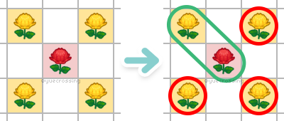
Now let's look at how the Checkerboard layout is impacted.
Applying the same logic as above, we can see that
Checkerboard is a big YIKES.
Look at all the clones that we might get with this layout! Leif would be disappointed with you.
(This problem is not very significant at 0V waterers, but is a
big issue at 5V).
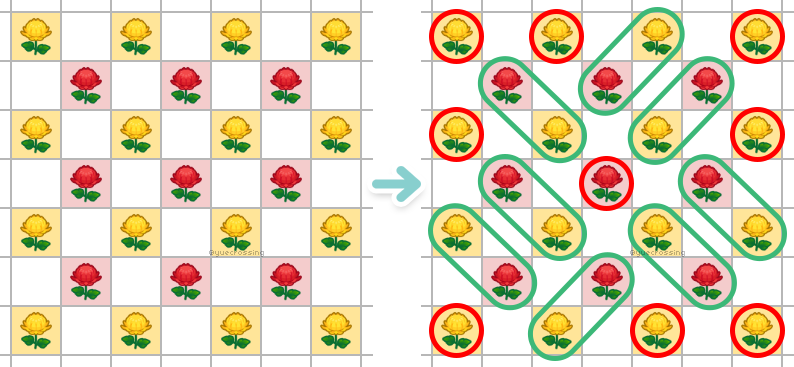
The layouts in this guide are tested and simulated to focus on a specific goal while maximizing
efficiency!
Uses: same species breeding where parents are both the same color.
Strengths: 100% clone-resistant. ideal single-species same-parent breeding layout. better than turtle at
3 visitors.
Weaknesses: not the most space efficient.
How to tile: make sure there is space inbetween each set of 2x2.
Tips: leave 2 empty spaces on opposite sides of the 2x2 square as shown.
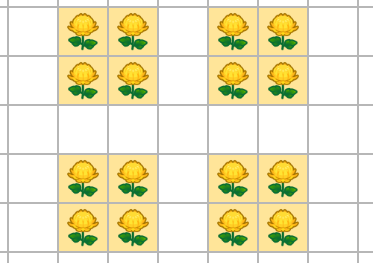
Turtle (tiled: "Super-Turtle")
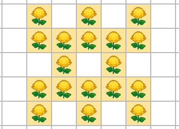
Uses: same species breeding where parents are both the same color.
Strengths: dense and space efficient, more offsprings than hexahole at 2-5 visitors.
Weaknesses: not 100% clone resistant (up to 2.5% clones at 5 visitors).
How to tile: tile right next to each other, leave empty space around entire layout if possible. (also
known as super-turtle)
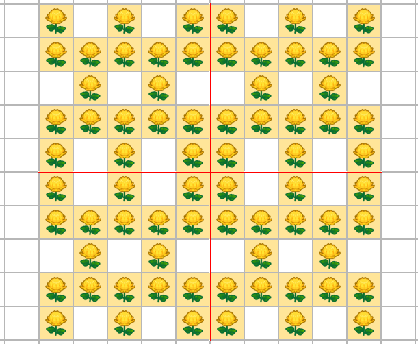
Hexahole ("Hexhole")
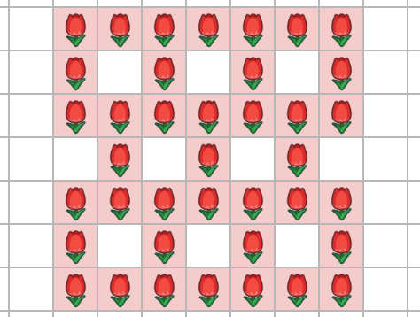
Uses: same species breeding where parents are both the same color.
Strengths: dense and space efficient, more offsprings than turtle at 0 visitors, more clone-resistant
than turtle.
Weaknesses: not 100% clone resistant (up to 1.3% at 5 visitors).
How to tile: tile the "hexahole component" below as needed depending on the size of your field.
(no need to copy exact size, just understand the "piece" and follow the pattern).
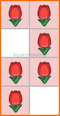
Breeding Layouts [different parents]
Isolated Pairs ("Independent Pairs", "IPs")
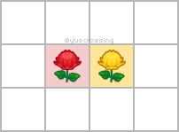
Uses: Same-species breeding (parents can be same or different colors).
Strengths: Everything-- 100% clone resistant, focus on individual gene combinations.
Weaknesses: Hardly anything, but you can adjust it to be more space efficient with cliff-assisted
IPs or multi-species dense IPs.
How to tile: Just make sure there is space inbetween each set of IP.
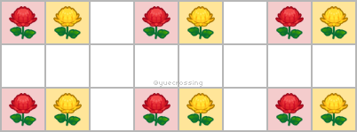
Diamond
do not tile diamond into checkerboard. this will increase likelihood of cloning.
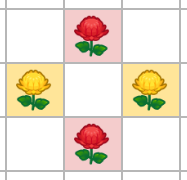
Uses: Same-species breeding (parents can be same or different colors).
Strengths: 100% clone resistant.
Weaknesses: Less space-efficient compared to isolated pairs. IP is better.
How to tile: Ensure that each set of diamond is not touching.
Tips: For tiling, it is slightly more space-efficient if you stagger each diamond.
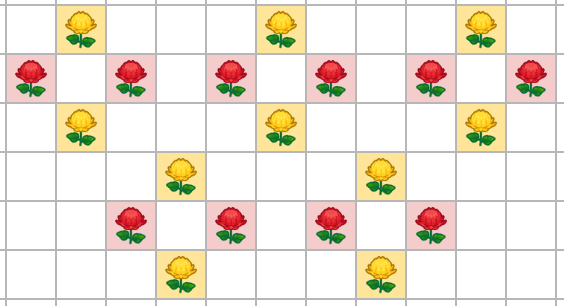
Isolated Pairs (cliff-assisted)
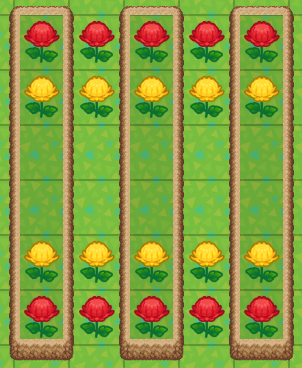
Uses: Same-species breeding (parents can be same or different colors).
Strengths: All the strengths of how good IP with bonus space-efficiency.
Weaknesses: You have to deal with cliffs bro.
How to tile: Like always, ensure each IP is not touching another.
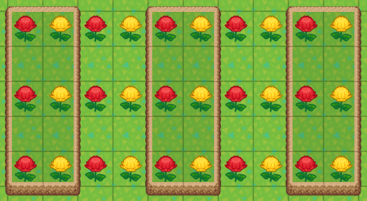
Breeding Layouts [multi-species]
Dense Isolated Pairs
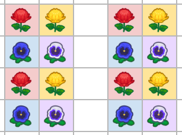
Uses: Multi-species breeding (parents can be same or different colors).
Strengths: All the strengths of how good IP but more space efficient! Easy to maintain and water.
Weaknesses: Very prone to failure (20-30%), which means when a flower fails to breed simply because
there is no more empty space for it to make an offspring. Use offset dense IPs to solve this problem!
How to tile: Make sure there is empty space between each column. You can double empty if you have
lots of visitors.
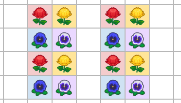
Offset Dense Isolated Pairs
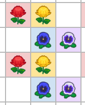
Uses: Multi-species breeding (parents can be same or different colors).
Strengths: SO GOOD. Ideal breeding layout. All the strengths of IP + space efficiency of dense IP +
signficantly lower failure rate (1-15%).
Weaknesses: nothing. (Can look messy, some people chose standard dense IP for aesthetics).
How to tile: Like below.
Dense Diamonds
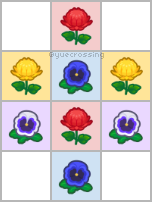
Uses: Multi-species breeding (parents can be same or different colors).
Strengths: Two overlapping diamonds for more space efficiency.
Weaknesses: Visually much more disorganized than offset dense pairs. Less space efficient because
tiling dense diamonds is super awkward.
How to tile: ... You do your best. Just like regular diamonds, staggering them a little bit is nice
(at that point just do offset dense pairs man lol...)
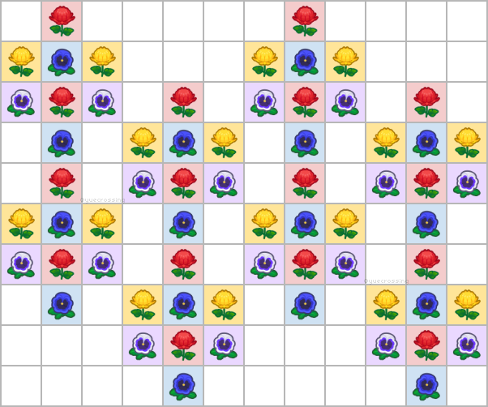
Cloning Layouts [single-species]
Isolated Clones
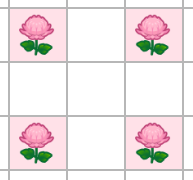
Uses: Standard cloning layout for just one species of flower.
Strengths: Easy & simple! Make sure it is not touching another flower of the same species.
Weaknesses: Not the greatest space efficiency.
How to tile: Again, just ensure they are not touching
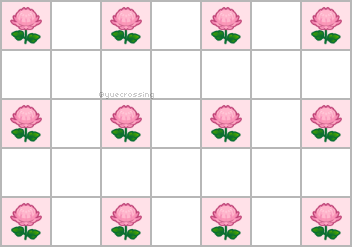
Cliff Cloning (single-species)
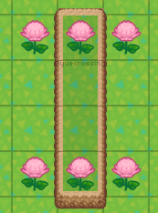
Uses: Cloning a single species of flower.
Strengths: Good space efficiency, exactly 1:1 empty space for each flower to clone onto.
Weaknesses: You have to deal with cliffs bro.
How to tile: You can tile it horizontally like picture A. To tile horizontally, put one extra space
inbetween.
Tips: The reason why we try to put 2 spaces instead of 1 between flowers is to minimize failure
rates!
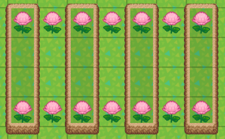
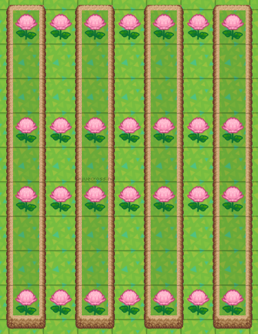
Cloning Layouts [multi-species]
Clone Rows
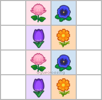
Uses: Cloning 4+ species of flowers.
Strengths: Super space efficient, easy to maintain, easy to water.
Weaknesses: None, really. It does require 4 species though.
How to tile: Just make sure there is space between two each row.
Note: Higher chance of failure with visitor waring, use double-spaced clone rows if 2+ waterers.
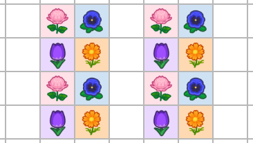
Clone Rows (double-spaced)
Same as clone rows above, but with 2 empty spaces between each row.
Strengths: Provides allowance for higher production rates (from visitor bonus) to reduce failures.
How to tile: self-explanatory. 2 empty spaces in between.
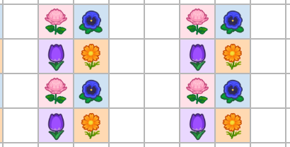
Offset Clone Rows
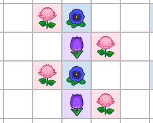
Uses: Cloning 3+ species of flowers.
Strengths: Same as regular clone rows, except the minimum # of species is 3.
Weaknesses: Requires a little more planning, less efficient than regular clone rows.
How to tile: Carefully plan where each of the 3 flowers are going to go such that it won't touch
another flower of the same species.
Note: Higher chance of failure with visitor waring, use double-spaced offset clone rows if 2+
waterers.
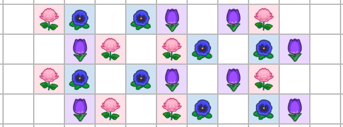
Offset Clone Rows (double-spaced)
Same as clone rows above, but with 2 empty spaces between each row.
Strengths: Provides allowance for higher production rates (from visitor bonus) to reduce failures.
How to tile: Planning, planning, planning. Same thing as offset clone rows with more spacing
inbetween each "pair" of clones.
cliff cloning (multi-species)
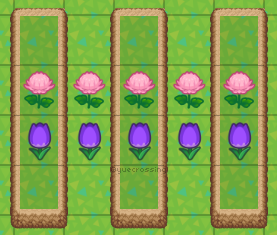
Uses: Cloning 2 or more species of flowers.
Strengths: 0% failure rate.
Weaknesses: You have to deal with cliffs bro.
How to tile: Ensure there's 2 empty spaces between each "pair" of clones.
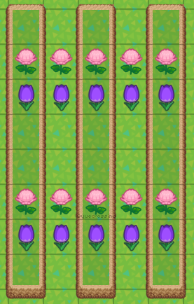
Testing Layouts
in testing layouts, our goal is to maximize breeding opportunities, but only allow one pair to breed.
2+1 testing layouts allows 1 pair to breed, and forces the 3rd flower to fail if it tries to clone.


{kind=link}
{kind=link}
{kind=link}